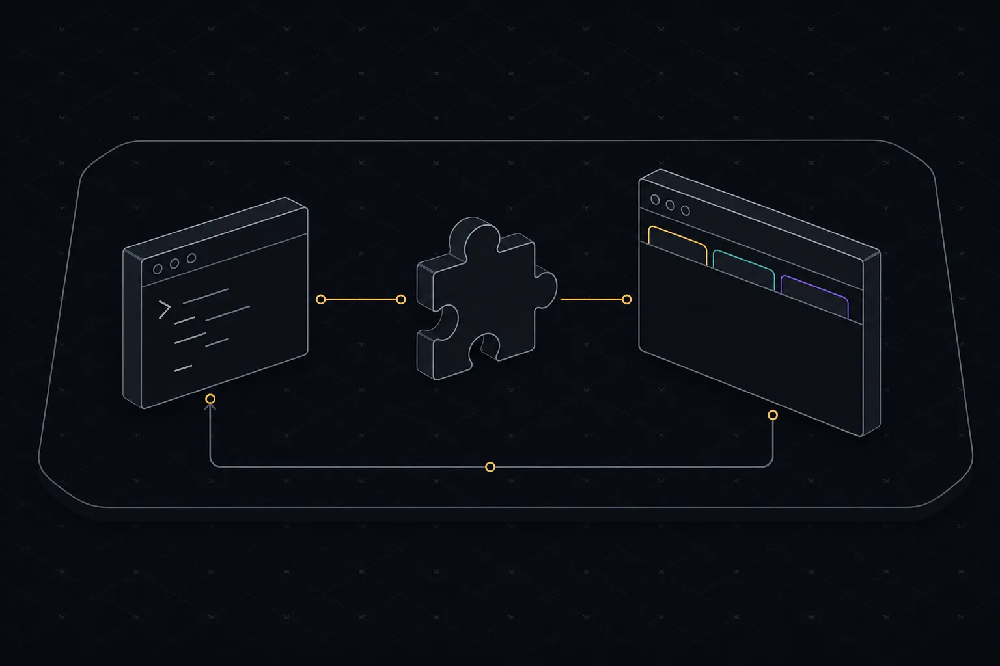
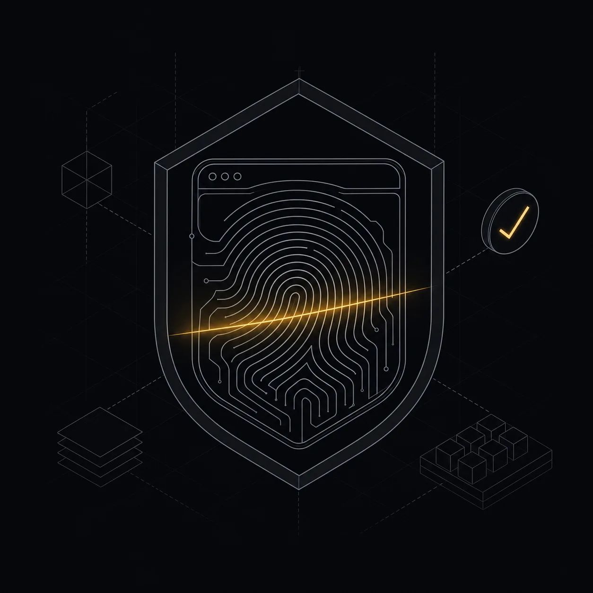

// 它解决什么
不用开新 Chrome，不用重新登录，不用跟"你是不是机器人"较劲。
常规自动化开的是一个空 profile 的全新浏览器：每个登录你重做，每个验证码你硬扛，最后还被网站标成自动化。chrome-use 直接用你现成的会话：cookies、登录态、指纹全是真的，因为它就是你的真实浏览器。
01Playwright / Puppeteer
它们启动空浏览器，每次重新登录、硬扛验证码，仍会被识别为自动化。chrome-use 复用你已有的会话。
02Claude 的 Chrome 插件
很好用,但只能给 Claude 用。chrome-use 给任意 agent / CLI 用,同一套真实浏览器。
03裸调试端口（CDP）
Chrome 136+ 每次连接都弹 "Allow remote debugging?"。chrome-use 走原生消息,商店一键装,之后零确认。
// 工作原理
全程在你本机,无网络端口、无 token、无远程服务器。
- 你的 CLI 通过 Chrome 原生消息和一个小浏览器扩展通信,走本机进程间通道。
- 扩展用
chrome.debugger驱动你指定的标签页,在你已登录的 Chrome 里操作。 - 每个
--session拿到自己彩色的标签组,多个 agent 共用一个真实浏览器互不打架。 - 不走
--remote-debugging-port,所以永不弹那个调试确认框。


// 反检测
网站眼里,它 100% 是个人。
因为它本来就是你的真实浏览器,不是模拟。我们把这件事拿去实测了。
0%
CreepJS 机器人分
0%
headless 特征
无
Runtime.enable 泄漏
7
权限,无 all_urls
// 横向对比
要细节的看这里。
同样是"驱动浏览器",差别在于:是不是你的真实登录态、弹不弹确认框、能不能多 agent 隔离。
| Claude in Chrome | 裸 CDP 端口 | Playwright 等 | chrome-use | |
|---|---|---|---|---|
| 任意 agent / CLI 都能用 | 仅 Claude | ✓ | ✓ | ✓ |
| 驱动你真实、已登录的 Chrome | ✓ | ✓ | 空 profile | ✓ |
| 不弹 "Allow remote debugging?" | ✓ | 每次都弹 | — | ✓ 原生消息 |
| 真实指纹(CreepJS ~0%) | ✓ | ✓ | 自动化特征 | ✓ 实测 0% |
| 无 Runtime.enable 泄漏 | — | 泄漏 | 泄漏 | ✓ 默认关 |
| 多 agent 共用一浏览器、标签组隔离 | 单 app | 无隔离 | 各开各的 | ✓ |
| 权限面 | 16,含 all_urls | 完整 CDP | 完全控制 | 7,无 all_urls |
// 安装
装好 CLI + 一键浏览器扩展,无 npm、无 token。
三步:装 CLI、装 Chrome 扩展并注册本地桥、拉 agent 技能。扩展走原生消息,装一次之后零确认,永远不弹 "Allow remote debugging?"。
① 安装 CLI
$ curl -fsSL https://raw.githubusercontent.com/leeguooooo/chrome-use/main/install.sh | sh
② 浏览器扩展(推荐) + 注册本地桥
# 1) 从 Chrome 应用商店装扩展(下方按钮) 2) 注册原生消息 host $ chrome-use extension install
③ 拉 AI agent 技能
# 把 Claude Code / Cursor 等的 SKILL.md 拉进当前项目 $ npx skills add leeguooooo/chrome-use
Windows 用户从 Releases 页下载 chrome-use-win32-x64.tar.gz,把 chrome-use.exe 放进 PATH 即可。
// 深入阅读
想看它怎么落地、怎么过反爬?
下面都是 blog.leeguoo.com 上的实战记录,从原理到啃硬骨头。
// *-use 家族
驱动你已经在用的真实设备。
同一个思路:不造模拟环境,直接接管你手里真实的、已登录的那一个。